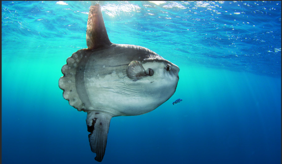
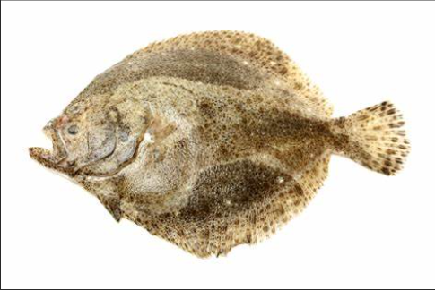
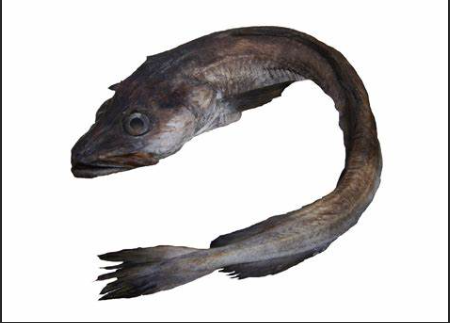
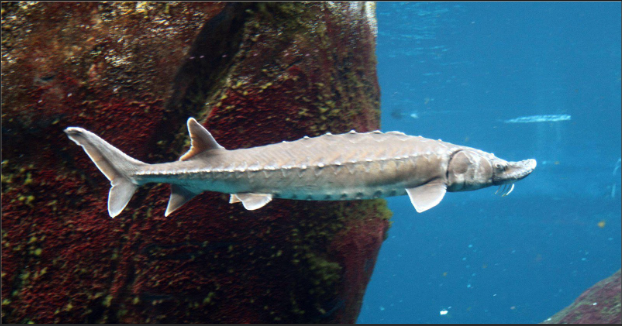

Les poissons pondent des millièrs, voire des millions d'oeaufs à chaque ponte. Heuresement, car peu d'entre eux donneront des petits
Le record est détendu par l'étrange poissons lune à gauche, de 300 millions. Et à droite 9 millions pour turbot pesant environ 8 kg
28 millions pour une lingue de 24 kg mesurant 1,50 m à gauche. Et à droite 5 millions pour l'esturgeon ses oeufs forment le caviar